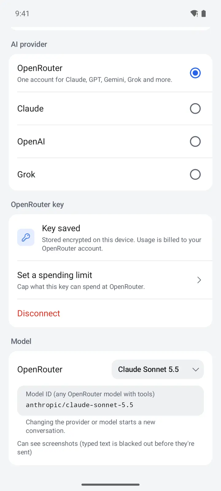

Let it do things, with your OK
How-to
You can ask the assistant to do more than answer: it can browse for you. Ask "find the trail map on this page and open it" or "download this video in 720p", and it reads, taps, types and searches, in regular tabs, with your OK.
What it can do
Each thing it does shows as a step on the card it shows while it works, and folds into one line over its answer when it's done (see ask about a page):
- read the page (Reading the page), find words on it, scroll, and wait for the page or some text to show up,
- look at the screen when the text isn't enough (Taking Screenshot), with fields and typed text blacked out, and other sites' frames too unless you shared the page on its card,
- open an address, go back (Going back), and search the web with DuckDuckGo ("Searching:" and the words),
- tap a link or button ("Tapping" and its name) and fill in a field (Filling in a field),
- start a video (Starting video), list the videos on a page (Checking for videos) and their real qualities and sizes (Checking available qualities),
- read a video's captions (Reading the video's captions), or, for one without captions, turn its speech into text on your phone (Getting the video's sound, then how far the transcribing is),
- save a video (Getting the download ready, then "Download started:" and the quality), check on a download (Checking the download) and list your downloads (Checking downloads),
- propose a plan for a bigger task (Proposing a plan).
It can't run anything on your phone, and it can't change Wayward's settings, Shields, locks or your files. It never types passwords, card numbers or one-time codes.

How much it asks
Settings > AI assistant > How it acts:
- Ask each time (the default): it asks before each step that does something on a page. Following a plain link doesn't ask.
- OK the task once: it asks once before starting, shows its plan when it has one, then works through the task by itself, typing included.
- Always allow: it reads, taps and types by itself, without the sharing card (pages on your local network still get it). Wayward asks first (Let the assistant act without asking?) with a privacy warning: pages and screenshots then go to your provider without confirmation, what it can do (up to 40 steps per message), what stays protected (form inputs and embedded site content hidden, private tabs never shared, locked tabs only after you unlock them, passwords, card numbers and verification codes never entered), and what it still asks first. Tap Allow to agree.
Under each choice, a line says what it still asks before: for example, "Your assistant will ask before buttons or forms that read as a login, purchase, deletion or send."


While Always allow or Always share pages is on, the panel says Always allow on or Always share on under the assistant's name, so you always know.

The cards it shows
- Before a step that does something, a card asks one question in the step's own words, with the site under it: 'Tap "Buy now"?', 'Type into "Email"?' (what it would type shows under it), "Open example.com?" (the whole address under it) or 'Search the web for "..."?' (on DuckDuckGo). One line says why it asks (below), and two buttons say what they do: Don't tap it and Tap it, Don't type it and Type it (or Type and submit), Don't open it and Open it, Don't search and Search. The one that goes ahead works after half a second. The chat notes your answer.
- Start task? comes before a task you'll OK once: its plan in numbered steps, the sites, what it shares with your provider, an estimate of the steps and tokens, and its limits. Tap Start task, or Not now. During the task the panel counts the steps, like "Step 3 of 40".
- Download this video? lists the video's qualities with the one it picked selected. You can pick another, then tap Download, or Not now. When the download ends, the chat says so ("Downloaded:" and its name; just A download finished. It's in Downloads. while Downloads is locked).
While another app draws over Wayward (a screen-dimming app, a chat bubble, a floating button), the buttons on these cards that let it go ahead don't take a tap, and a red line on the card says Another app is drawing over Wayward. Close it and tap again. See what Wayward's messages mean.

What it asks about in every mode
Whatever you set in How it acts, a card comes up before these, and its line says which it is. It knows a log-in, a purchase, a deletion or something sent in your name by the words on the button or link (for a deletion, the heading near it too), and by its form: a password or card field, or an address with "login" or "checkout" in it. A button worded some other way can go without a card under Always allow or a task you OK'd, so on sites where you're signed in to something that matters, keep How it acts on Ask each time.
- a log-in: This looks like a log-in, so the assistant asks you first.
- a purchase: This button may start a purchase, so the assistant asks you first. (for a button; This looks like a purchase, so the assistant asks you first. for anything else),
- a deletion: This looks like a deletion, so the assistant asks you first.
- sending something in your name, like Send, Post or Confirm: This may send something in your name, so the assistant asks you first.
- anything inside another site's frame on the page: This is inside another site's frame on the page, so the assistant asks you first.
- typing or pressing on a different site from one it read earlier in this chat, so what it read on one site isn't typed or pressed into another without your OK, and, with Always allow or a task you OK'd, a web search once it has read a page (with Ask each time, every search has a card anyway): It read another site before this, so the assistant asks you first.
- opening an address that didn't come from you or from a page it read: This address didn't come from you or a page the assistant read, so it asks you first.
Other steps that ask, because of how it acts, say For steps like this, the assistant asks you first. After the reason, each line says that nothing happens until you choose, like Nothing is pressed until you choose. The line uses the name you gave the assistant, if you gave it one.
At a "verify you're not a bot" check it stops and tells you, in every mode. You can tap Stop at any time. One message also stops after 15 steps (40 for a task you OK'd, or with Always allow), and the chat says so, like "Stopped after 15 steps. Ask again to continue."
For how to stay safe with it, see what's sent, and staying safe.